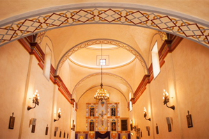

About Leaders' Church International
"My house shall be called a house of prayer for all nations" — Isaiah 56:7
Who We Are
Leaders' Church International is a commonwealth of a peculiar people and a dynasty of a royal priesthood, born again by grace through faith in Christ, and living by the same faith to make exploits for God (Ephesians 2:8, Galatians 3:11).
We are an international church because our mission is to make disciples of all the nations through the preaching and teaching of the gospel of Christ — in obedience to the great commission given to us to disciple all nations.
Leaders' Church International is the home of "BLESSED OVERCOMERS" (Rev. 2:7; Rev. 2:11, 17, 26; Rev. 3:5-6, 12-13). Christ is coming for "Overcomers," and our church is being built as a home for them. Our faith in Christ qualifies us to be both "Blessed people" (Galatians 3:9) and "Overcomers" (1 John 5:4).
We are kings and priests;
We are born leaders through faith in Christ;
We are carriers of the seed of greatness, the Word of God;
Our greatness is by serving our generation selflessly with integrity and excellence;
And if the Lord tarries, we shall leave behind us the legacy of a royal priesthood.
This is a declaration of the faith that defines us as leaders. It is a daily confession that shapes our lives, a revelation of what our faith in Christ did for us, does for us, and will do for us. It is our benediction at the end of every worship service.
"And now abide faith, hope, love, these three; but the greatest of these is love."
— 1 Corinthians 13:13Vision, Mission & Strategy
"Heavenly vision…" — Acts 26:19LCI Vision
To facilitate the vision of Christ for a royal priesthood church which is a global family, borderless, united, purpose-driven and glorious.
Jeremiah 32:38-40 • Ephesians 4:4-6 • John 17:22-23 • Ephesians 5:25-27
"Our Reason for Existence" — Mark 10:45Mission Statement
To raise a vanguard of men and women of status whose visionary leadership in pursuit of their purpose, inspires the world to embrace the faith in Christ; through exemplified godliness, quality of life, excellent achievements, and selfless service to God and humanity.

"Strategic Direction" — Ecclesiastes 10:10Our Strategy
To communicate the gospel and raise men and women, young and old, who are purpose-driven for the coming of Christ, exceptionally gifted and endowed with godly virtue; and to accelerate the growth of the body of Christ by raising and fruitfully engaging a virile workforce equipped for high performance in soul-winning within the context of a community church with a global reach.
To superimpose the culture of God's Kingdom on the worldly way of thinking and lifestyle by the principles of the Word of God and the lifestyle of pre-eminent love of God and unconditional love towards our neighbors.
Matt 11:2 • Matt 22:37-40 • John 13:34-35 • 1 John 3:16-18
Areas of Ministry
Seven departments built to nurture faith, community, and calling — structured to create an enabling environment for prayer, evangelism, retention, and mentoring.
A love-driven and care-giving interactive cell group.
Catering for the needs of people groups within same age brackets, and with peculiar social challenges, emotional felt needs, and spiritual responsibilities.
- → Valiant Men International
- → Women Aflame International
- → Favored Singles
- → Vibrant Youth International
- → Special Needs Group
Reaching out to the community strategically to meet specific needs with tailored programs and projects.
Instructing and supporting believers to lead a life of godliness and contentment, integrity and excellence.
Imparting knowledge to implant the glory for impacting our world.
- → Membership Assimilation Modules
- → Workforce Development Training
- → Apostolic Leadership Development
Praying forth the Kingdom, fasting-down strongholds, and establishing the will of God.
Demonstrating the power of God to compel the world to Christ.
Our Seven Pillars of Values
"Wisdom has built her house; she has hewn out her seven pillars" — Proverbs 9:1.
In line with the Word of God, we have our seven pillars of wisdom as follows:
Identity
Leaders' Church International is a people-friendly, socially warm, spiritually inspiring, diverse but united, and pro-community church communion that is strong in integrity by the standard of the word of God. It is a Christ-centered, and love-driven community in an environment of God's Presence.
John 13:35 • 1 John 1:2 • Psalms 114:1-8
Establishment
We would facilitate the establishment of the hearts of God's people with the Grace of God through the impartation of spiritual gifts and the ministry of the word of God. We will help God's people to receive the Kingdom that cannot be shaken.
Romans 1:11 • 2 Cor. 3:2-6 • Eph. 4:14 • Heb. 13:9-10 • 1 Thess. 3:12-13 • Heb. 12:28 • 2 Thess. 2:16-17
Mentoring
We pledge to feed and nurture God's people with the word, guide them aright, and provide the leadership by example that will reveal Christ as our role model.
Heb. 13:7, 17 • 1 Peter 5:2-3 • 2 Tim. 1:13-14 • 2 Tim. 2:2 • 1 Cor. 11:1 • Acts 6:4
Empowerment
We shall create an environment and opportunities for God's people to discover and align with their purpose and equip them to fulfill their purpose. This will enable them to take initiative for leadership within the sphere of their influence — the political arena, the marketplace, the workplace, the intellectual world etc. Vision, integrity, and service will be the hallmark of our empowerment initiatives.
Psalm 105:13-22 • Eph. 4:11-12 • 2 Tim. 1:6-9
Enrichment
This is the redefinition of prosperity as the revelation and the release of the tangible Presence of God in a man. It entails teaching and emphasizing the Spirit-filled life. It means modeling Abraham, Jacob in Laban's house, Joseph in Egypt, David, and Daniel in Babylon as a challenge to raise "kings and priests" who will fulfill God's mandate on earth.
Gen. 39:2-6 • Gen. 30:27-30 • Exod. 19:5-6 • Psalm 110 • Eph. 3:14-21 • 1 Peter 2:9 • Rev. 5:10
Maturity
This is the feeding of God's people with the nourishing word of God and a continual prayer support for growth and maturity that exemplifies Christ and prepares them ready as the bride of Christ who overcomes sin, Satan and self.
Colossians 1:28 • Eph. 4:11-16 • Luke 1:17b
Charity
This is the act of taking initiatives that will enable us to shine as the light of the world and the savor of salt to the world as we diffuse the fragrance of Christ through good works and good words which inform and shape our destiny.
2 Thess. 3:16-17 • Titus 3:8, 14 • Titus 2:13-14 • Matt. 5:16 • Eph. 4:29 • Col. 4:6 • 2 Corinthians 2:14